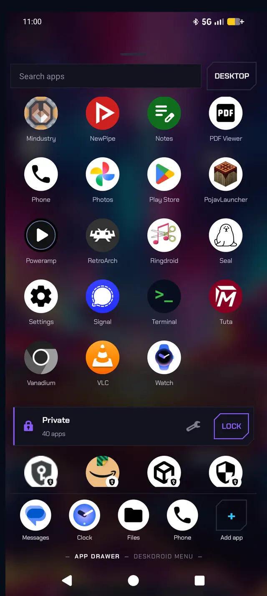

DeskDroid User Manual
DeskDroid is a real KDE Plasma 6 desktop that runs on your Android phone. Use it right on the phone's screen with your fingers, or plug in a monitor, keyboard and mouse and use your phone like a computer. Linux apps from Flathub, DeskDroid's own apps and your Android apps all sit side by side on one desktop.
This manual covers everything from the first start to troubleshooting. DeskDroid is in alpha and changes every week, so a few screens may look a little different from what's written here. The newest copy of this manual is always on the DeskDroid website.
01Getting started
What you need
- An Android phone or tablet running Android 10 or newer, with a 64-bit (ARM64) processor.
- Enough free storage for DeskDroid (the APK is about 250 MB, and it unpacks to more on first start), plus room for the apps you install. Big Flathub apps and their runtimes can take several hundred MB each.
- Optional: a USB-C display adapter or dock, a keyboard and a mouse. Bluetooth keyboards and mice work too.
DeskDroid doesn't need root, and there's no Linux image to download. Everything is inside the one app.
Install DeskDroid
- Download the newest APK from the DeskDroid releases page on GitHub (the Download the alpha button on the website).
- Open the APK on your phone. If Android asks, allow your browser or file manager to install apps.
- Open DeskDroid. The first time, it shows the setup checklist.
To update, install a newer APK over the old one. Your desktop, files and apps stay where they are.
The setup checklist
Android stops apps that run lots of programs in the background, and a desktop does exactly that. The checklist turns on what DeskDroid needs to run like a real computer. Tap each card to fix it. A card turns green once it's done.
| Item | What it does |
|---|---|
| Child process limit | Stops Android from killing desktop programs when there are many of them. On Android 14 and newer, it's a switch in Developer options. On Android 12 and 13, it's fixed once with an ADB command, which the card copies for you. |
| Battery optimization | Lets DeskDroid run without Android putting it to sleep to save battery. |
| Background usage | Lets the desktop keep running when you switch to another app. |
| Status notification | The notification that keeps the desktop running. |
| DeskDroid desktop helper | An accessibility service that keeps Android's taskbar off the desktop, takes a monitor back from Android's desktop mode or DeX, and passes the Meta key and Alt+Tab to the desktop. |
| Share files with the desktop | All files access, so the desktop's Documents, Downloads, Pictures, Music and Videos are your phone's own folders. |
| Make DeskDroid your home screen | Recommended. Pressing Home takes you to your desktop. |
There are also a few switches at the bottom:
- Start on phone boot warms the desktop up in the background so it opens instantly. It uses some battery and about 1 GB of memory.
- Lock my desktop asks for your fingerprint or PIN to open DeskDroid.
- GPU for Linux apps (experimental) lets Flathub apps draw with the phone's GPU. Turn it off if an app won't open. It applies the next time the desktop starts.
Android will make some of these permissions look scary. DeskDroid doesn't collect any data: the permissions are only used to make its features work. You can open the checklist again any time from DD Home's Setup checklist row.
DD Home
DD Home is the screen you see when you open the DeskDroid app (or when DeskDroid isn't your launcher).
- Play on picks where the desktop runs: This phone or Monitor.
- Start desktop starts the desktop. If DeskDroid is your home screen, it says Go to desktop. If the desktop is already running, it says Desktop is running · tap to return.
- Quick settings has the touch mode, your phone files and the setup checklist.
- The ⚙ button opens Settings: touch mode, how fast the phone's touchpad screen goes black on a monitor, the setup checklist, the GPU report, phone files, Debug Mode and Save log.
02The desktop
DeskDroid's desktop is KDE Plasma 6, the same desktop people use on Linux PCs, built for Android.
The panel
The panel at the bottom of the screen has:
- The start menu on the left. Find any app by typing its name, or browse by category. Your Android apps are in it too, sorted by kind, and the power and session buttons are at the bottom.
- The taskbar with a button for each open window. Tap one to bring its window forward, or to minimize it if it's already in front.
- The system tray with the clock, battery, network, volume, notifications and the touch mode icon (a finger for Direct touch, a pointer for Touchpad).
Windows
Windows work as on a PC: drag the title bar to move one, drag an edge or corner to resize it, and use the buttons on the right of the title bar to minimize, maximize or close. Drag a window to a screen edge to snap it to that half of the screen.
On the phone's screen, windows move up out of the way of the phone keyboard in portrait, and stay clear of the camera cutout in landscape.
Files
Dolphin is the file manager. With Share files with the desktop on, your Documents, Downloads, Pictures, Music and Videos folders are the phone's own, so a file you save on the desktop shows up in your Android apps and the other way round. The rest of the desktop's home folder (settings and app data) stays private to DeskDroid.
To open a file in an Android app, right-click it and use Open With. In Konsole, android-open <file or link> does the same.
The clipboard
The desktop and the phone share one clipboard. Copy text in a desktop app and paste it in an Android app, or the other way round.
System Settings
System Settings is Plasma's own settings app, with DeskDroid's own pages added:
- System › About This Phone: your phone's Android version, memory, kernel and DeskDroid build, plus this manual.
- Display & Monitor › Display Settings: scaling and graphics.
- Gestures › Edge Swipes and Taps: what each gesture does.
- Input & Output › Mouse & Touchpad › Touchpad: Enhanced Touchpad Mode.
- Appearance, Wallpaper, Cursors, System Sounds, Splash Screen, Shortcuts and Accessibility work as on any Plasma desktop.
The terminal
Konsole is a terminal. Type help for a list of commands. DeskDroid adds a few of its own:
android-openopens a file or link in an Android app.dd-logsaves DeskDroid's log (dd-log -hfor more).dd-powershows what's using power right now.
03Touch and gestures
Touch modes
DeskDroid has two ways to use the phone's screen. Switch between them with a three-finger tap, the DD Menu, or DD Home's Settings.
- Direct touch: tap and drag right where you want, like a tablet.
- Touchpad: the screen is a laptop touchpad. One finger moves the pointer, a tap clicks, a two-finger tap right-clicks, and two fingers scroll.
Enhanced Touchpad Mode (on by default) works like the buttons on a laptop touchpad. While one finger rests on the screen, a second finger's tap clicks and its hold holds the left button down for dragging. Three taps right-click. Two taps then a hold holds the right button. Turn it on or off in System Settings › Input & Output › Mouse & Touchpad › Touchpad.
Gestures
These are the defaults. Each one can be changed or turned off in System Settings › Gestures.
| Gesture | What it does |
|---|---|
| Swipe up from the bottom edge | Opens the app drawer |
| Swipe up from anywhere on the bare desktop | Opens the app drawer (Direct touch only) |
| Swipe up from the bottom-left corner | Shows or hides the phone keyboard |
| Three-finger tap | Switches between Direct touch and Touchpad |
| Three fingers swiped up | Maximizes the window you're using |
| Three fingers swiped down | Minimizes the front window into its taskbar button |
| Hold three fingers on a window | Grabs the window: move your fingers to drag it, and push it to an edge to snap it |
| Two thumbs swiped up from both bottom corners at once | Shows the game controls (from build 1135) |
Other gestures you can set up: swipes in from the left, right and top edges, from the bottom-right corner, three fingers left or right, and a two-finger tap. Each one can open the DD Menu, the keyboard, the start menu, the Overview or the app drawer, switch touch mode, show the desktop, minimize all windows, switch to the last window, go back, move or resize a window, maximize, minimize, snap, go full screen or close a window.
The Gestures pages also have switches for the touch mode tray icon, the app drawer, opening the drawer from anywhere, the Private Space section, and how far up from the very bottom a bottom-edge swipe may start.
The phone keyboard
Swipe up from the bottom-left corner to show or hide the phone's keyboard, or use the Keyboard tile in the DD Menu. In the DD Menu you can also choose:
- Keyboard spawning: Manual (only when you ask for it) or Automatic (whenever a text field gets focus).
- Phone keyboard typing: Plain keys, or Swipe & autocorrect for swipe typing, autocorrect and suggestions from Gboard, SwiftKey and other keyboards.
The phone's Back gesture or button acts as Escape on the desktop.
Keyboard and mouse
Plug in a USB keyboard and mouse, or pair Bluetooth ones, and they work like on a PC. With the desktop helper on, the Meta (Windows) key opens the start menu and Alt+Tab switches windows instead of going to Android.
In the DD Menu:
- Mouse: Captured keeps the pointer inside the desktop. Free lets it leave for Android.
- Scroll behavior: Wheel scrolls in steps like a mouse wheel. Touchpad scrolls smoothly.
Headset and Bluetooth play/pause buttons control whatever is playing on the desktop, even with the screen off.
04App drawer
Swipe up on the desktop to open the app drawer, a phone-style list of all your Android apps. The desktop blurs and shrinks behind it, and the drawer follows your finger. Pull it down to close it.
- Search and A to Z, like your phone's launcher. With a keyboard plugged in, just start typing.
- Private Space sits locked at the bottom. Unlock it with your phone's lock screen. Its apps stay out of Plasma's menu and search.
- Work profile apps get their own section with a Pause button.
- Smart about scrolling: a swipe on a window scrolls the window. With a window in front, the drawer only opens from near the bottom edge.
- The DD Menu is its second page. Swipe sideways to reach it. The pager at the bottom shows which page you're on, and the DD Menu's quick-access dock is pinned to the bottom of the apps page.

06Monitors and peripherals
Use a monitor
- Connect the monitor with a USB-C display adapter or dock.
- In DD Home, set Play on to Monitor, then tap Start desktop.
The desktop goes full screen on the monitor, and the phone becomes its touchpad, with edge swipes and a MENU button for the DD Menu. To save power, the phone's touchpad screen goes pure black after it sits untouched for a while (30 seconds by default, set in DD Home › Settings). A tap wakes it without clicking anything.
Each monitor keeps its own scale. DeskDroid recognizes the monitor and remembers the scale you picked for it.
Android's desktop mode and DeX
Phones with Samsung DeX or Android's own desktop mode may try to take over the monitor. With Keep Android's desktop off the monitor on (DD Home, with Play on set to Monitor) and the desktop helper turned on, DeskDroid draws above Android's taskbar and takes the monitor back by itself. Take back the monitor (or Exit DeX and take the monitor) does it right away.
Playing without a keyboard
For games that need a keyboard and mouse when you have neither plugged in, use the on-screen game controls (see Gaming).
07Display and graphics
Open System Settings › Display & Monitor › Display Settings.
- Scaling: the phone screen's scale (Automatic follows the phone's screen density) and each monitor's scale. Reset all scaling goes back to the defaults.
- Graphics backend: how Linux apps reach the phone's GPU. It applies to apps opened after the change. DeskDroid HD gives Linux apps desktop OpenGL on the phone's own driver, including PowerVR GPUs.
- Show an FPS counter in Linux apps, to see how fast a game or app is drawing.
- Legacy Graphics Compatibility Fall back makes Linux apps use Android GLES (virgl) as in earlier builds. Try it if an app draws wrong or won't open.
The GPU report in DD Home › Settings shows what your phone's GPU drivers offer. Share it when you report a graphics problem.
08Power and battery
Power profiles
Pick a profile from the battery icon in the system tray (the active one has a check mark) or from the DD Menu. A profile applies to everything on the desktop: KWin, Plasma, Linux apps, Windows apps and Flatpaks.
| Profile | Frame rate | CPU cores | App CPU cap |
|---|---|---|---|
| Performance | The screen's full rate | All | None |
| Balanced (default) | 60 per second | All but the fastest | None |
| Power Save | 30 per second | The efficient cores | 1 core per app |
Power Save also turns Plasma's animations off. Light work like music, downloads or a text editor never reaches the CPU cap. The sound server, sound effects, whatever is playing sound and the terminal are never slowed.
In the DD Menu, Power Save with Battery Saver switches the desktop to Power Save while Android's Battery Saver is on.
With the screen off
With Save power when off (the default, in the DD Menu's Display options), the desktop winds down while the screen is off: windows stop drawing, apps get a tenth of a core, and animations stop. Music and downloads keep going without skips, and your profile comes back when you turn the screen on. Pick Full power when off to keep everything running at full speed.
To see what's using power, run dd-power in Konsole. It also writes ~/power.log.
09Sound
The desktop has a full PipeWire sound server, like a modern Linux PC. Every Linux app's sound goes through it to your phone's speakers, headphones or Bluetooth.
- EasyEffects (from Agora) adds system-wide equalizers, limiters and other effects.
- ViPER FX is DeskDroid's own sound effects app, in Agora's DeskDroid Repo.
- Now playing: Bluetooth headphones, car stereos and watches show the desktop's song, and a media notification appears on the lock screen.
- Media buttons on a headset or Bluetooth device play and pause the desktop's player, even with the screen off.
10Apps and Agora
Agora, the app store
Agora is DeskDroid's app store. Open it from the start menu, or the DD Menu's Agora (Software) tile.
- DeskDroid Repo has apps built for DeskDroid itself: KDE apps compiled for Android, DeskDroid's own apps like Sasha, ViPER FX, Etherium and the Wine runtime for games, and themes.
- Flathub has Flathub's own ARM64 Linux builds, repackaged without changes. Browse by category or search. DeskDroid's compatibility layer, ddmask, translates what they ask of Linux into what Android allows while they run. Apps marked x86-64 only are translated as they run through FEX-Emu, which is slower.
- Dependencies are the runtimes Flathub apps share (KDE, GNOME, Freedesktop and Mesa for graphics). Installing an app installs the runtimes it needs first.
- Updates: Agora checks for new versions each time it opens. An app with a newer version shows Update, and the tabs count the updates waiting.
The first start of a newly installed app can take a while, because it lays out its files once.
Install from a file
An .adpk is a DeskDroid package, like a .deb or .rpm: one file with the app, its menu entry and icons. Double-click one in Dolphin, or use Install from a file… in Agora. Install packages only from people you trust.
Android apps
Your Android apps are in the start menu (sorted by kind), the app drawer, and the desktop's search. They open in their own windows next to your Linux apps. Android widgets can go on the desktop too: they're in Plasma's Add Widgets list with the Plasma widgets.
x86 programs
x86-64 programs run on your ARM phone. ddmask hands x86-64 Linux programs to Box64, and x86-64 Flatpak apps run through FEX-Emu. Windows programs run through Wine (see Gaming).
11DeskDroid's own apps
Etherium
Etherium is DeskDroid's own build of Firefox. It has no Mozilla account or Sync and less data collection, and its sound plays through the desktop's sound server so your effects hear it. It supports WebGPU and shows what's playing to Bluetooth devices. Install it from Agora's DeskDroid Repo.
Sasha
Sasha is DeskDroid's music player. Sasha DD Edition wears the DD Party look. Install it from Agora's DeskDroid Repo.
ViPER FX
ViPER FX is a sound effects app for the whole desktop, with a limiter and level meters. Install it from Agora's DeskDroid Repo.
Discord
Discord comes as a native ARM64 package: Discord's own web app inside Electron's official ARM64 build, with nothing running through emulation. It needs the Freedesktop and Mesa runtimes, which Agora installs with it. It's still being tested on phones. If it closes in its first minute, it tries again in safer modes and remembers what worked, so the first start can take a couple of tries. Screen sharing doesn't work yet.
Steam
Steam is coming to DeskDroid, running through FEX-Emu. The Steam Installation Assistant in the start menu sets it up and has maintenance tools. Steam isn't ready for everyday use yet. Login, the store and the library are still in progress.
12Gaming
Game controls
From build 1135, DeskDroid has an on-screen gamepad for games that want a keyboard and mouse, such as Wine games, Steam games and native Linux games.
- Show it: swipe two thumbs up from both bottom corners at the same time, or tap Game controls in the DD Menu.
- Hide it: swipe three fingers down. While the controls are showing, that swipe hides them instead of minimizing the window.
The joystick on the left holds W, A, S and D (or the arrow keys) like fingers on a keyboard. Push past its edge, or double-tap it, to hold Shift or Ctrl to run. Buttons hold their keys while your finger stays on them. The rest of the screen is the mouse: in shooters and first-person games, dragging there turns the camera and a tap fires; in other games, a tap clicks where your finger is.
The bar at the top has ESC and other quick keys, the preset's name (tap it to switch presets), a keyboard button, hide, and edit. In edit mode, drag any control to where your thumbs like it. Each preset remembers its own layout, and Reset layout puts it back.
| Preset | Made for |
|---|---|
| WASD · Default | Most keyboard and mouse games: WASD, Shift to run, Space to jump, mouse buttons |
| Garry's Mod | Sprint, crouch, use, reload, the Q spawn menu and C context menu (they stay open until tapped again), undo, noclip, flashlight, chat |
| Minecraft | Sprint, sneak (stays on until tapped again), inventory, drop, swap hands, hotbar, chat, change view |
| SuperTuxKart | Steer with the stick, gas and brake buttons, fire, nitro, drift, look back, rescue |
| ReTux | Move, jump, action (grab, throw, run), sneak, menu and pause |
Windows games with Wine
Wine for games (in Agora's DeskDroid Repo) runs Windows games through Wine and Box64. Game launchers set up particular games for you. The Sims 3 launcher asks for your game folder and starts the game.
Linux games
Games from Flathub, like SuperTuxKart, ReTux and Minecraft through Prism Launcher, install from Agora and use the phone's GPU.
13Look and feel
DD Party
DD Party is DeskDroid's own look: near-black surfaces, magenta, rainbow accents and chamfered corners, with a matching icon pack, window borders, splash screen, and terminal and editor colours. GTK apps match through a DD Party build of Breeze GTK, and Etherium wears it too. DD Party Glass blurs everything behind windows and panels. Change themes in System Settings › Appearance, as on any Plasma desktop.
Widgets
Right-click the desktop and choose Add Widgets (or enter edit mode) to add Plasma widgets and Android widgets. Widgets only move in edit mode. The Widget Pager is a stack of widgets you swipe through, one per page: drag desktop widgets into it.
Android's bars and the cutout
In the DD Menu's Panel display behavior, choose Hide Android bars (swipe in from an edge to see them, and they hide again) or Show Android bars. Choose Full screen or Dodge cutouts to keep the panel clear of the camera cutout.
14Privacy and security
- DeskDroid doesn't collect any data. Its permissions are only used to make its features work.
- Lock my desktop (in the setup checklist) asks for your fingerprint or PIN to open DeskDroid.
- Your Private Space stays locked in the app drawer, out of Plasma's menu and search. Lock private profile in the DD Menu locks it again.
- The desktop's settings and app data stay private to DeskDroid. Only the shared folders are visible to other apps.
- DeskDroid is free software under the GPL-3.0. Its source code is on GitHub.
15Troubleshooting
Save a log
When something goes wrong, a log shows what happened. Save one in any of these ways:
- The Save log tile in the DD Menu (with Debug Mode on).
- Save log to Downloads in DD Home › Settings.
dd-login Konsole.
The log goes to your phone's Downloads folder as deskdroid-log-<date>.txt, and to ~/deskdroid-log.txt on the desktop.
Debug Mode (DD Home › Settings, on by default) adds two more tiles to the DD Menu. Steam logs zips every Steam log into Desktop/steam_logs.zip. More logs zips the graphics layer's logs, plus any paths you paste, into Desktop/logs.zip.
Common problems
| Problem | Try this |
|---|---|
| The desktop closes by itself or apps disappear | Open the setup checklist and make sure every item is green, especially Child process limit and Battery optimization. |
| A Linux app won't open | Make sure its runtimes are installed in Agora. Look at store/apps/<app>/run.log. Turn off GPU for Linux apps in the setup checklist, or turn on Legacy Graphics Compatibility Fall back in Display Settings, then restart the desktop. |
| An app draws wrong or is very slow | Try the other graphics backend in Display Settings and check the GPU report. Switch to Balanced or Performance if you're on Power Save. |
| Everything is too big or too small | Use the Scale stepper in the DD Menu, or Display Settings. |
| The monitor shows Android's desktop instead of DeskDroid | Turn on the desktop helper, then tap Take back the monitor in DD Home. |
| The phone keyboard doesn't type into an app | Switch Phone keyboard typing to Plain keys in the DD Menu. |
| The desktop is stuck | Restart desktop in the DD Menu restarts Plasma and every desktop app. |
Report a bug
Report problems on the DeskDroid GitHub page's Issues tab. Say what you did, what you expected and what happened, and attach a saved log. For graphics problems, add the GPU report.
16Glossary
| Word | Meaning |
|---|---|
| .adpk | A DeskDroid package file for one app |
| Agora | DeskDroid's app store |
| Box64 | Runs x86-64 Linux programs on ARM |
| DD Home | The DeskDroid app's own screen on the phone |
| DD Menu | DeskDroid's control center, the app drawer's second page |
| ddmask | DeskDroid's compatibility layer that lets Linux apps run on Android |
| DeskDroid HD | DeskDroid's graphics layer for desktop OpenGL |
| FEX-Emu | Runs x86-64 programs and Flatpak apps on ARM |
| Flathub | The biggest store of Linux apps, packaged as Flatpaks |
| KWin | Plasma's window manager |
| Plasma | KDE's desktop: the panel, start menu, widgets and settings |
| Runtime | A shared set of libraries that Flathub apps need |
| Wine | Runs Windows programs |